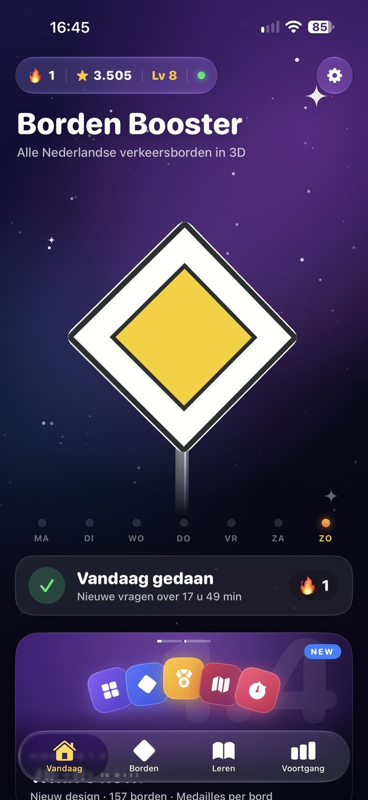
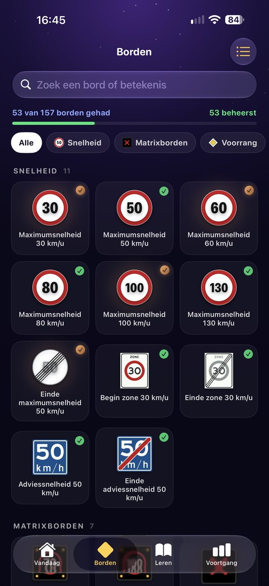
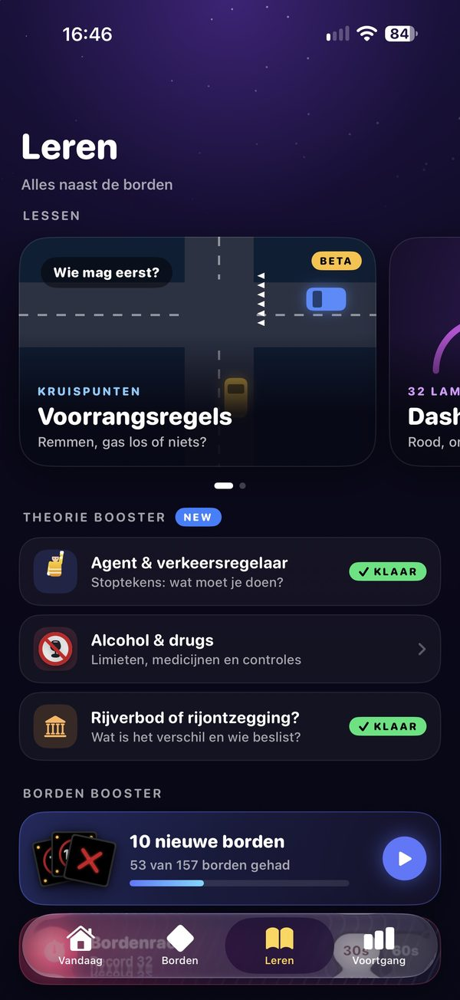
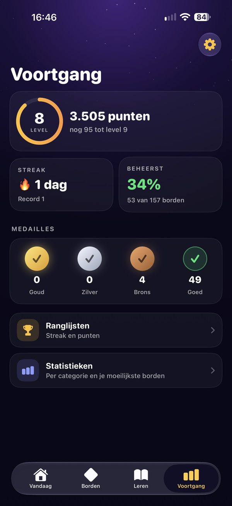

Borden Booster
Alle 157 Nederlandse verkeersborden in 3D. Leer ze voor je theorie-examen, elke dag een beetje.
Download in de App StoreGratis · iPhone en iPad · Binnenkort op Google Play

Nieuw in 1.4
Alles wat nieuw is, in anderhalve minuut
De video komt van YouTube en laadt pas als je op afspelen drukt. Bekijk op YouTube
Wat zit erin
Oefenen dat blijft hangen
Korte rondes, echte borden en een beetje spel. Zo ken je ze op het examen zonder erover na te denken.
157 borden in 3D
Op basis van de officiële tekeningen. Draai elk bord rond en zie wat het van je vraagt.
Daily Challenge
Elke dag 10 vragen. Houd je streak vast en klim op de ranglijst in Game Center.
Bordenrace
30 of 60 seconden: zoveel mogelijk borden goed. Hoe ver kom jij?
Lessen als leerpad
Voorrang, agent en verkeersregelaar, alcohol en drugs: korte stappen met snelle checks.
Dashboardlampjes
Alle 32 lampjes bekijken en oefenen. Gratis.
Medailles en voortgang
Brons, zilver en goud per bord, en precies zien welke borden je al beheerst.
Zo ziet het eruit
Vier tabs, één nieuwe nachtstijl



Over Borden Booster
Wie zijn theorie haalt, moet honderden verkeersborden kennen. De meeste apps daarvoor zijn platte plaatjes met een vraag eronder, of zetten het nuttige deel achter een abonnement. Ik wilde iets dat beter blijft hangen: borden die je in 3D kunt ronddraaien, en echte situaties op de weg waarin je ziet wat zo'n bord van je vraagt.
- Geen abonnement. Niet nu, en ook niet later.
- Advertenties weg met één eenmalige aankoop.
- Alle 157 borden in 3D, op basis van de officiële tekeningen uit het RVV 1990.
- Een 3D-verkeerssituatie per bord, met uitleg wat je moet doen.
Borden Booster is een leerhulpmiddel. De officiële regels gaan altijd voor.
Privacy
Borden Booster heeft geen accounts en geen eigen servers. Je voortgang en instellingen blijven op je eigen apparaat. Ik kan die gegevens niet zien.
- Staat iCloud aan, dan gaat je voortgang via je eigen iCloud naar je andere Apple-apparaten.
- Ben je ingelogd bij Game Center, dan komen je score en streak op de ranglijsten van Apple.
- Advertenties komen van Google AdMob. In de EU vraagt de app eerst je toestemming voor gepersonaliseerde advertenties.
- Aankopen lopen via Apple of Google. Ik ontvang geen betaalgegevens.
- Stuur je feedback, dan zie ik alleen je e-mailadres en je bericht.